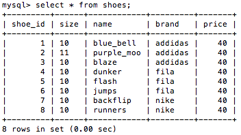
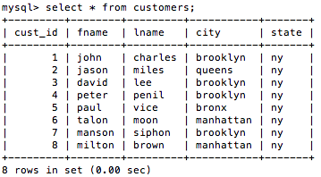

Joins - MySQL Relational Database
Using Joins
So far we have gone over how to create and insert values into a table. Additionally, we learned how to select, modify, delete, add or alter values in our table(s). In this next section we are going to go over how to select or modify multiple values from different tables. One of the key components to using joins is being able to identify our values using keys (primary, etc.). So, if you don't have more than one table or if those tables don't both have a column which has a primary key, then you won't be able to join the two tables using some of the joins I will be mentioning.
Equi Join
The most often and default join is called an Inner join. For the sake of this example I am going to just create two tables to show how we can join them.
Code:
CREATE TABLE shoes (
shoe_id INT (2) UNSIGNED AUTO_INCREMENT PRIMARY KEY,
size VARCHAR (2),
name VARCHAR (10),
brand VARCHAR (10),
price INT (5) );
INSERT INTO shoes VALUES
( null, 10, 'blue_bell', 'addidas', FORMAT(40, 2) ),
( null, 11, 'purple_moon', 'addidas', FORMAT(40, 2) ),
( null, 10, 'blaze', 'addidas', FORMAT(40, 2) ),
( null, 10, 'dunker', 'fila', FORMAT(40, 2) ),
( null, 10, 'flash', 'fila', FORMAT(40, 2) ),
( null, 10, 'jumps', 'fila', FORMAT(40, 2) ),
( null, 10, 'backflip', 'nike', FORMAT(40, 2) ),
( null, 10, 'runners', 'nike', FORMAT(40, 2) );
CREATE TABLE customers (
cust_id INT (2) UNSIGNED AUTO_INCREMENT PRIMARY KEY,
fname VARCHAR (20),
lname VARCHAR (20),
city VARCHAR (30),
state VARCHAR (2) );
INSERT INTO customers VALUES
( null, 'john', 'charles', 'brooklyn', 'ny' ),
( null, 'jason', 'miles', 'queens', 'ny' ),
( null, 'david', 'lee', 'brooklyn', 'ny' ),
( null, 'peter', 'penil', 'brooklyn', 'ny' ),
( null, 'paul', 'vice', 'bronx', 'ny' ),
( null, 'talon', 'moon', 'manhattan', 'ny' ),
( null, 'manson', 'siphon', 'brooklyn', 'ny' );
Let's look at the contents of these tables before we try to join them.
Shoes
Customers
Alright, now let's try an inner join in order view some contents from both tables, let's start out by viewing all the content first.
Code:
SELECT * FROM customers INNER JOIN shoes ON
customers.cust_id = shoes.shoe_id;
Equijoin customers and shoes

Why use joins?
So some of you may be wondering, what the purpose of using a join is? Can't we just select everything from out tables like this.
Code:
SELECT * FROM customers, shoes;
Alright, the problem with using queries like the one above is that our database will pull every variation of the result. So instead of returning only 8 rows, 64 rows would be returned.
Previous Page Next Page